Operating Documentation
Direction 5133330-3, Rev# 14
Signa EXCITE HD 3.0T Service Methods
Module Version 1.0, Version Date 5/3/07
Operating Documentation |
This manual is for the servicing of the hardware components used for the GE BrainWaveHW Lite (M1033BL) Option.
These following components are shipped as part of the product:
Table 1: BrainWave Cabinet
| Component | Qty | GE P/N |
| [Cedrus] Lumina Response Controller Box | 1 | 2394034-6 |
| [Cedrus] AC Power module for Lumina response controller box. | 1 | 2394034-7 |
| 5 foot VGA Cable | 1 | n/a (part of 15 LCD Display 2363727) |
| AC Power Cable for 15 LCD Display | 1 | n/a (part of 15 LCD Display 2363727) |
| Stimulus Computer (PC) including AC power cord | 1 | 2303343-2 |
| Power strip | 1 | 2394034-11 |
Table 2: Box 1 LCD Display
| Component | Qty | GE P/N |
| 15” LCD Display (See Illustration 1) | 1 | 2363727 |
Illustration 1: Box 1

Table 3: Box 2 Shielded Cable
| Component | Qty | GE P/N |
| Shielded Cable (65' (30m)) to be used inside of the magnet room (penetration sub-panel to OTEC unit). See Illustration 2. | 1 | Part of 2394034-9 cable kit |
Illustration 2: Box 2

Table 4: Box 3 Shielded Cable
| Component | Qty | Avotec P/N | GE P/N |
| Shielded Cable (65' (30m)) to be used inside of the magnet room (penetration sub-panel to Cedrus Lumina Response Pad in the BrainWave Cabinet). See Illustration 3. | 1 | 758620 | Part of 2394034-9 cable kit |
Illustration 3: Box 3
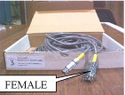
Table 5: Box 4 Response Pads, Fiber Cables, OTEC Unit
| Component | Qty | GE P/N |
| R/L Response Pads/Fiber Optic Cable/OTEC Unit Assembly to be used inside the magnet room. (See Illustration 4). | 1 | 2394034-5 |
Illustration 4: Box 4

Table 6: Box 5 PC Compatible Keyboard
| Component | Qty | GE P/N |
| PC Compatible Keyboard to be used with the Stimulus PC in the BrainWave Cabinet. (See Illustration 5). | 1 | 2394034-16 |
Illustration 5: Box 5
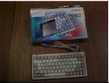
Table 7: Box 6 Sub-Panel and Other Components
| Component | Qty | GE P/N |
| Bulkhead Threaded Clips | 2 | 46-265067 P1 |
| Y-Trigger Cable | 1 | 2394034-8 |
| Penetration Sub-Panel Assembly | 1 | 2394034-10 |
| PC Compatible Mouse | 1 | 2394034-17 |
| Network Cable (75') | 1 | 2394034-18 |
| Adhesive mount folder | 1 | N/A |
| Headphones (not shown) | 1 |
Illustration 6: Box 6
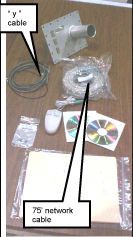
This hardware is compatible with the following hardware:
Signa NV/i 1.5T
Signa 3.0T
2402205 - BrainWaveHW Lite Option Hardware Installation
2359813 - Software Installation Manual
Functional Magnetic resonance Imaging (fMRI) consists of single-shot Echo Planar Imaging (EPI) pulse sequences used in conjunction with clinical paradigms to visualize signal intensity changes during task activation. The Brainwave software is also used to accomplish this type of examination. With these key elements working simultaneously, images are produced and post processed into color maps. The color maps display the intensity levels where the task activation has occurred. The final product is commonly known as Brain Mapping. The acquisition and detection of relative changes in the MR signal over time are believed to be tightly coupled to changes in neuronal activity.
Brainwave hardware interaction with system.
The System cabinet will send a trigger pulse to the Brainwave Stimulus PC in the brainwave cabinet during the acquisition of a brainwave (or fMRI) scan to indicate patient stimulation. The Response Pads in the scan room has two purposes:
Verifies that the patient is responding to the audio/visual stimulation when asked
Can generate patient motor activity by pressing buttons.
Illustration 7: Block Diagram
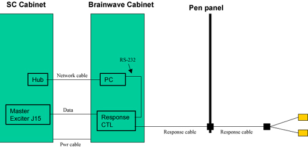
Play audio from the Stimulus PC by either running the test calibration paradigm (it is not continuous), play a CD, or run a wave file continuously.
Check computer generated audio input signal with PC test headphones. If audio signal is bad, troubleshoot PC (check balance settings and mute checkbox).
Check the PC audio out with the PC headset. If audio signal is low, adjust the volume using the PC software controls.
Press the Response Pad buttons in the magnet room, and have an independent observer at the BrainWave Cabinet observe the R/G/B/Y LED's on the Response Interface box respond accordingly. If not, check that power is reaching the Response Interface box from the cabinet power strip. Also check that the response fiber optic cable is properly connected at the Response Interface box and the Response Pad assembly, as well as at the mating connection. SeeIllustration 8 . This will verify continuity between response pad and controller. If LED’s do not light, check cabling between response pad in magnet room and controller in Brainwave cabinet.
On the Stimulus PC start the comtest program by opening Windows Explorer then selecting: C/Program Files / Sensor Systems / NeuroActivator 1.050W / comtest.exe
A window will appear. Press the four response pad buttons in the magnet room. The following numerical values should appear
Blue: number 49
Yellow: number 50
Green: number 51
Red: number 52
This verifies communication from response pad in magnet room, through controller box, then to Stimulus PC. If there is no response on the PC, and Section 2.3.1, step 1 is fine, check cabling between Control Box and PC.
Illustration 8: Check Response Fiber Optic Cable
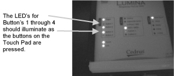
On the Stimulus PC start the comtest program by opening Windows Explorer then selecting: C/Program Files / Sensor Systems / NeuroActivator 1.050W / comtest.exe
A window will appear.
Set up for an FMRI scan using the following parameters:
Patient Position: Supine
Patient Entry : Head first
Coil: Standard Head coil
Plane: Axial plane
Mode: 2D
Pulse Sequence: Gradient Echo EPI
Select fMRI imaging option.
Click on the fMRI Screen (see Illustration 9) in the middle of the monitor and enter the parameters noted in Illustration 10. Select [Accept] when done.
Auto Pre-scan and scan.
After the scan is complete, check the output from the com test. You should see: A new pulse received number is 53
This verifies communication between SC cabinet and stimulus PC.
The outputs from the Response Pads and the system trigger from the Systems Cabinet are routed through the Response System Electronics and then to the serial port of the Stimulus PC.
If the BrainWave hardware does not receive the trigger from the Systems Cabinet, the paradigms will not go past the ready state.
Run the Serial Port Test (commtest.exe) on the Stimulus PC and check the inputs from the Response Pads (have someone push the buttons) and the system trigger (run a test BrainWave acquisition from the AW to start the trigger).
Signals from Response Pads will be numbers 49-52.
Signal from the system trigger will be number 53.
The Response Electronics may get hung up, try cycling the power.
If response or trigger signals are not present, trace the signals using the interconnect diagram back through the Response Electronics.
| NOTE: | To stop the NeuroActivator and keep the screen from constantly
displaying the 4 color boxes, right click on the NeuroActivator icon
on the Start bar and select [Exit]. To re-start
NeuroActivator, click on Start, Programs, NeuroActivator, NeuroActivator
- Clinical. The signals are sent through pins 4 and 9 of the DB-9 connector on J31 of the Tyme II bd. |
Illustration 9: fMRI Screen

Illustration 10: Parameters

The network connection between Stimulus PC and host can be verified by “pinging”.
From Stimulus PC go to Start / Programs / Command Prompt.
Type ping b5-tgate (where b5 is the IP address of the system. Check /etc/hosts on the scanner for the IP address. If you cannot ping the host, there are network issues. Verify continuity of network cables. Verify proper Hub operation.
From host PC, open a Cshell. Change directory cd /etc Type more hosts
Type ping 10.0.1.9 (or the address associated with gestimpc in /etc/hosts. The ping command should be successful.
Insert the DQA coil in the head coil, and landmark on the center.
Perform localizer scan
Patient position: Supine
Patient entry: Head first
Plane: 3-Plane (majority of parameters will fill in automatically)
FOV: 23.4
Slice Thickness: 5
Hit [Save Series] and scan.
Select [New Series] after scan is complete.
Perform the Structural scan using the following protocol below.
Using graphic prescription on a coronal image from the localizer series and scan.
Structural Scan Prescription
Patient Position: Supine
Patient Entry: Head First
Coil: Head
Series Description: Structural
Plane: Axial
Mode: 3D
Pulse Seq: SPGR
Imaging Options: VBw (Not needed for version 12x software)
Psd Name: - blank -
Protocol: - blank -
See Table 8.
Select Graphic RX. Using the cursor, center the block over the Coronal image. See Illustration 11. Click on x in upper left position when finished.
Click on [Save Series], then click on [Download]. Select [Prescan] then select [Scan].
Perform the FMRI scan using the following protocol below. Click on [New Series] then select Patient Position. Fill in the parameters noted in Table 9.
FMRI Scan Prescription
Patient Position: Supine
Patient Entry: Head First
Coil: Head
Series Description: Activation
Plane: Axial
Mode: 3D
Pulse Seq: Gradient Echo EPI
Imaging Options: fMRI
Psd Name: N/A
Protocol: - blank -
Select fMRI and select Right-Motor (hardware or software depending of the availability of BrainWave hardware) for Paradigm in the fMRI sub-panel. See Illustration 12.
Click on [Graphic RX]. Position the cursor in the positions noted to produce 23 images. Make sure the prescribed images are centered as shown in Illustration 13.
Hit [Save Series], then [Download].
Right Mouse click over the “Research Operations” button and select “Display CVs”. Select the “RTIP_test” CV and change the “Current Value” from “0” to “1”. This causes the epi PSD to simulate BOLD activity by switching flip angle between prescribed rest and activation states which will result in whole phantom activation during the following tests. Right mouse click over the “Research Operations” button again and “Download” to apply the CV value change during scanning.
Press [Prep Scan]. The BrainWaveRT “Control” panel should become visible upon successful completion of prescan. Note that the [Scan] button should be disabled. Press the <Start Scan> button on the keyboard to begin the scan.
Select Browser, then select the fMRI exam to be processed and press the “BrainWave” button. The panel should appear.
Select the Process tab as shown in Illustration 14.
Press the “Select/Process Structural MRI” button. Observe the pop-up panel instructing the user to select a structural dataset in the display browser. Select the nonsegmented, structural series and then press the “Segment” button on the pop-up panel. Observe that the Processing Status panel should appear with a text description of the processing being performed, and a progress bar that shows activity while processing is occurring. Upon completion, the progress bar is completely filled in and the message at the top of the processing status panel stays “No current image processing”.
Click on the Select/Process Functional MRI button. Select the Functional series, and select Process as shown in Illustration 15.
Click on the Select/Process Functional MRI button. Select the Functional series, and select Process. A Message will appear in the upper right section of the screen indicating Smoothing fMRI scans. The image inIllustration 16 will appear.
Press “Quit” to exit BrainWavePA. Then view the resulting segmented images in the display browser. The newly segmented series that is produced should have the same number of images as the original structural dataset. This indicates that the Brainwave scan was successful.
Table 8: Structural Scan Prescription
| Scan Timing | |||||
| TR | TE | Flip Angle | Bandwidth | # of Echoes | |
| 30 ms | Min Full | 45 | 15.63 | 1 | |
| Acquisition Timing | |||||
| Frequency | Phase | NEX | P FOV | Freq DIR | A C F |
| 256 | 192 | 1 | 0.75 | A/P | water |
| Scanning Range | |||||
| FOV | S Tk | # slices | |||
| 12 | 1.2 | 68 | |||
Illustration 11: Structural Graphic RX
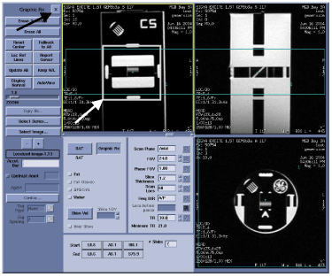
Table 9: FMRI Scan Prescription
| Scan timing: | ||||||
| TR | TE | Flip Angle | Bandwidth | # of Echoes | ||
| 4000 ms | 40 ms | 90 | 62.5 | 1 | ||
| Acquisition timing: | ||||||
| Frequency | Phase | NEX | P FOV | Freq DIR ACF | ||
| 64 | 64 | 1 | 1 | R / L water | ||
| Scanning range: | ||||||
| FOV | S Tk | Spac | # slices | |||
| 24 | 3 | 0 | 23 | |||
| User CV's: | ||||||
| CV 3 dummy acqs | CV 6 initial state | CV 7 baseline dur | CV 8 stim dur | CV 9 scan dur | ||
| 4 | 0 | 6 | 6 | 96 | ||
Illustration 12: FMRI Scan

Illustration 13: FMRI Graphic RX
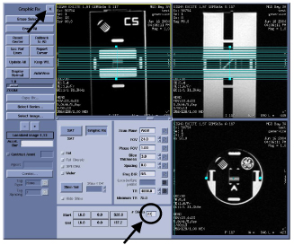
Illustration 14: Process Tab
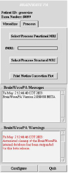
Illustration 15: Functional Series
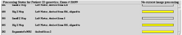
Illustration 16: Smoothing FMRI Scans
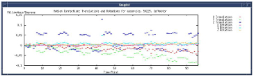
The default settings for the Lumina Controller are:
| Baud rate | 9600 |
| ASCII/MEDx |
See diagram.
Illustration 17: Lumina Controller
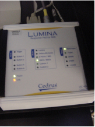
Initially the video output of the Stimulus PC is connected directly to the Monitor in the Brainwave cabinet. The customer may place their video stimulator between the PC and the Monitor. If there is no video on the monitor, you can by-pass the customer’s equipment. If problems remain, you can use the video output of your laptop to verify operation of the monitor.
| Part Number | Description | |
|---|---|---|
| 5110946 | PC and Platform Software Assembly | |
| 5110767 | BrainWave Application Software CD ROM | |
| 5110968 | Patch CD for BrainWave Stimulus PC | |
| 2363727 | 15" LCD Display with 5 foot VGA cable needed for computer connection (Amtran) | |
| 2394034-5 | [Cedrus] Response pad assembly, left & right hand units with two buttons for each hand, includes fiber optic cable (20 ft) and optical converter box. | |
| 2394034-6 | [Cedrus] "Lumina" response controller box. | |
| 2394034-7 | [Cedrus] AC Power module for Lumina response controller box. | |
| 2394034-9 | (FRU usage only) Kit containing all cables [Cedrus-4, -5, -6, -7, 2xxxxxx-6, 46-265057P1 (qty 2)] | |
| 2394034-10 | Penetration Sub-Panel Assembly | |
| 2394034-16 | PC compatible keyboard (narrow) | |
| 2394034-17 | PC compatible mouse | |
| 5110736 | Excite II Scanner License Key MOD for the BrainWave Hardware Option | |